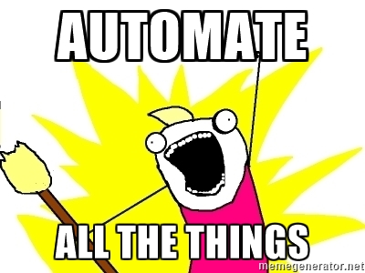
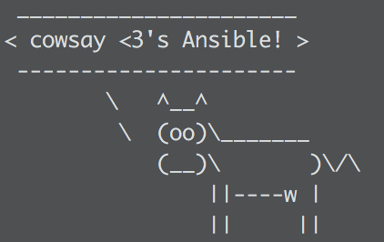
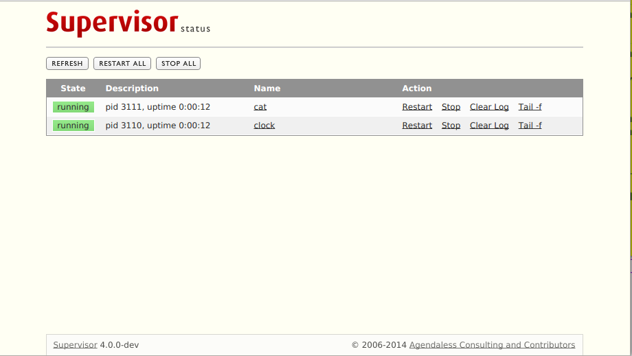

Python Automation
Using Ansible, Fabric, and Supervisor
Jared Ondricek sdfkjhdsfkjsdhf
flamableconcrete@gmail.com https://github.com/flamableconcrete
NOVA-Python 10/27/2016
Who am I?
- The MITRE Corporation
- Python enthusiast
- DevOps junkie
- Android forensics and reverse engineering
- PyLunch
How I view this Talk
Ansible
Supervisor
Fabric
But First
Story Time
- Started a new project
- Bash scripts
- Python scripts
- Need a database
- Python module
- Of course it doesn't stop there
Still Story Time
- Message Queue
- Other apt-get dependencies
- Wrote a Flask web app
- All of a sudden, spaghetti code
Then Someone Asks
Your Instructions

- You give them nice instructions
- They're pretty
- Easy to follow
Their Interpretation
You Want to Scream
This is Why You Should
Ansible
- IT Automation Tool
- Deploys/provisions software onto systems
- Agent-less - ssh only
- Idempotent
- Agent-less
- Has anyone used Chef/Salt/Puppet?
- Idempotence
- Idempotence is the property of certain operations that can be applied multiple times without changing the result beyond the initial application.
- In the case of methods or subroutine calls with side effects, the modified state remains the same after the first call.
Cowsay Support
How do I get it?
Linux/OS X
$ sudo pip install ansible
Windows
- Cry
- Bash on Windows 10
- Ansible Babun Bootstrap (Github)
Key Components
- We will go over these sections on the following slides
Inventory File
- Master or local inventory
- INI syntax
- Groups
(contents of /etc/ansible/hosts) mail.example.com [webservers] foo.example.com bar.example.com [dbservers] one.example.com two.example.com three.example.com
Ad-hoc Commands
- One off commands you don't need to save
$ ansible webservers -a "touch /home/user/foo.log" $ ansible mail.example.com -a "/sbin/reboot" -u username --become -K $ ansible dbservers -m copy -a "src=/etc/hosts dest=/tmp/hosts"
- -a is for ad-hoc command
- --become is for becoming another user, by default sudo
- -K is to ask for sudo password
- -m is to use a module
Configuration File
- ansible.cfg (Master or local)
- Pre-set custom inventory
- Pre-set flags
- Convenient for sudo
Playbooks
- Infrastructure as code
- YAML syntax
- Replace <deploy | install | configure>.sh
- Look at some examples
- Usage:
$ ansible-playbook playbook.yml
- language_features/mysql.yml
- language_features/rabbitmq.yml
- language_features/get_url.yml
Roles
- Playbook management
- roles directory
- Common structure
- Follow Best Practices
- Look at examples again
- wordpress-nginx is straightforward
700+ Modules
- Modules for everything!
- Cloud!
- Infrastructure!
- Database!
- Packaging!
- Python! (virtualenvs, django, etc.)
- Google: ansible ___
- copy, template, rabbitmq, etc.
- Specific modules will depend on what you are trying to do
Ansible Galaxy
- User contributed roles
- ansible-galaxy command
edX
- Just one example in real life
- edX.org provides free online courses from some major universities
- https://github.com/edx/configuration
What's Next?
- You've installed a bunch of stuff
- Is any of it running?
- Check manually
- Monitor processes
- Supervisor!
Supervisor
- Let's you control and monitor process state on UNIX-like systems
- A program that runs other programs
Components
- supervisord
- should run automatically on startup
- supervisorctl
- CLI
- supervisord.conf
Installation
$ sudo apt-get install supervisor $ sudo yum install supervisor $ sudo pip install supervisor
Gotcha: if you pip install, it is on you to (auto)start the supervisord process
Configuration File Driven
The config file can define the set of programs that must be run in
- a development environment
- a production environment
for a single project
Manage processes through:
- Command line tool (supervisorctl)
- Web interface
- XML-RPC
Config file sections of note are "include" and "program". Let's take a look at the docs
Enable the [inet_http_server] if you want the web interface.
Processes that Supervisor controls must run in foreground - can't be daemonized.
Multiple programs can be put in process groups to manage simultaneously.
Great. Now you've told Supervisor to do something. Is it doing it?
supervisorctl
- help
- status
- start
- stop
- tail
Always good to check the logs if your process isn't starting, or frequently restarting.
Ansible can be used to install Supervisor, then add programs that are managed by it. It is also used in some Docker containers to run multiple processes instead of just one.
DEMO
What about Fabric?
Python 2 library for automating and streamlining app deployment over ssh. A little overlap with Ansible, but still useful.